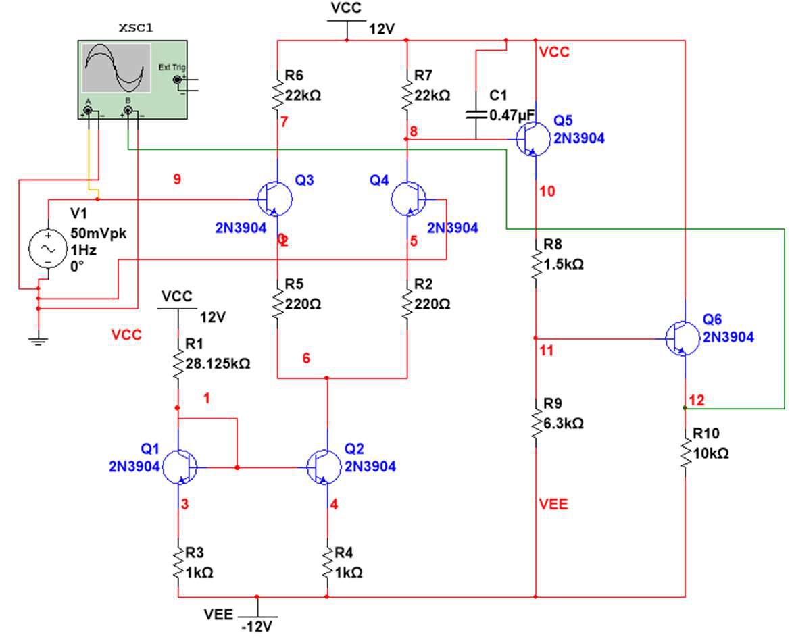

Overview
I designed an operational amplifier from discrete components, no op amp IC, and then characterized it the way you would a real part. Starting from a biased current mirror, I added a differential pair and two common collector output stages, then measured differential and common mode gain, CMRR, slew rate, output swing, input bias current, offset, and bandwidth, comparing every result against simulation.


What I built
1) Current mirror bias network
- Designed a current mirror for an 800 microamp bias at plus and minus 12 V rails using 2N3904 BJTs, then added emitter degeneration to stabilize it against load changes.
- Swept the load resistance from 10 ohms to 500 kilohms and showed that the degenerated mirror held near 800 microamps far more consistently than the basic version.
2) Differential pair and output stages
- Connected a differential amplifier to the current source, then added two common collector stages, one to cancel DC offset and one as a buffer to reduce output loading.
- Built and simulated the full amplifier in Multisim before moving to the bench.
3) Full characterization
- Measured differential gain, common mode gain and CMRR, slew rate, output voltage swing, input bias current, output offset, and open loop bandwidth.
- Evaluated the amplifier in inverting, non inverting, and buffer configurations at 2 V/V and 10 V/V, sweeping frequency to find each closed loop bandwidth.
Results
- Differential gain matched simulation within about 3 percent, and CMRR measured near 78 dB.
- Closed loop gains tracked the nominal values closely at low gain (under 10 percent error at 2 V/V), with larger deviation at 10 V/V, traced to the amplifier's deliberately low open loop gain near 28 V/V.
- The current mirror landed within about 1 percent of its 800 microamp target and proved insensitive to a BJT swap, confirming a robust bias.
About 78 dB CMRR, gain within roughly 3 percent of simulation
A working op amp from discrete BJTs, characterized end to end and explained against its non ideal limits.